Versicherte müssen Warnkleidung tragen, wenn sie
und durch bewegte Schienenfahrzeuge (Fahrzeuge bei Eisenbahnen, Straßen- und U-Bahnen, Materialbahnen) oder auf Bahnübergängen durch bewegte Straßenfahrzeuge gefährdet werden.
Zur Auswahl der Warnkleidung ist im Rahmen der Gefährdungsbeurteilung die Erkennbarkeit der Warnkleidung unter Berücksichtigung der auszuführenden Tätigkeiten, Körperhaltungen und Umgebungsbedingungen zu bewerten. Entsprechend dem Ergebnis der Gefährdungsbeurteilung ist Warnkleidung so auszuwählen, dass insgesamt die Klasse 2 oder 3 erreicht wird.
Im Gegensatz zu Arbeiten im Bereich von Straßen richtet sich die Auswahl der Warnkleidung bei Bahnen nicht nach Verkehrsdichte und Geschwindigkeit. Wesentliches Kriterium bei der Auswahl der Warnkleidung im Gleisbereich ist die Erkennbarkeit der Warnkleidung unter Berücksichtigung der auszuführenden Tätigkeiten.
Wegen der besseren Erkennbarkeit wird empfohlen, im Gleisbereich grundsätzlich Warnkleidung in der Farbe fluoreszierendes Orange-Rot zur Verfügung zu stellen. Abweichend davon kann Sicherungspersonal Warnkleidung in der Farbe fluoreszierendes Gelb tragen (siehe Kapitel 6.2).
Die Warnkleidung muss generell enganliegend sein und ist im Gleisbereich stets geschlossen zu tragen.
Betriebsdienstmitarbeiter/innen und Betriebsfremde fallen unter den Geltungsbereich der DGUV Vorschrift 72 "Eisenbahnen" bzw. der DGUV Vorschrift 73 "Schienenbahnen" und müssen daher Warnkleidung tragen, wenn sie durch bewegte Schienenfahrzeuge gefährdet sind.
Betriebsdienstmitarbeitende bzw. Mitarbeitende im Eisenbahnbetrieb erfüllen sicherheitsrelevante Arbeitsaufgaben im Bahnbetrieb. Das sind z. B. Triebfahrzeugführende, Zugbegleitpersonal, Rangierer und Rangiererinnen und Wagenmeister und Wagenmeisterinnen bei Eisenbahnen sowie Fahrer bzw. Fahrerinnen und Verkehrsmeister und Verkehrsmeisterinnen bei Straßenbahnen. Für diese Tätigkeiten sind die Regelungen in §§ 17 und 25 der DGUV Vorschrift 72 "Eisenbahnen" bzw. der DGUV Vorschrift 73 "Schienenbahnen" anzuwenden. Dort sind bezüglich der Warnkleidung folgende Regelungen enthalten:
Betriebsdienstmitarbeitende, die sich im Gleisbereich aufhalten und durch bewegte Schienenfahrzeuge gefährdet werden, müssen mindestens Warnkleidung der Klasse 2 nach DIN EN ISO 20471 tragen.
Rangierer und Rangiererinnen, Lokrangierführer und Lokrangierführerinnen sowie Wagenmeister und Wagenmeisterinnen müssen grundsätzlich Jacke und Hose als Warnkleidung tragen.
Betriebsdienstmitarbeitende, die bei der Sicherung von Bahnübergängen und -überwegen des Schienenverkehrs durch Straßenfahrzeuge gefährdet werden (z. B. bei der Postensicherung an Bahnübergangsposten, die Bahnübergängen nach § 19 Abschnitt 5 StVO sichern), müssen mindestens Warnkleidung der Klasse 2 nach DIN EN ISO 20471 tragen.
Das bedeutet, dass alle Betriebsdienstmitarbeitende im Gleisbereich mindestens Warnkleidung der Klasse 2 nach DIN EN ISO 20471 tragen müssen. Bei Mitarbeitern und Mitarbeiterinnen im Bahnbetrieb, die sich nur zeitweise im Gleisbereich aufhalten oder innerbetriebliche Verkehrswege für Personen im Gleisbereich benutzen, wird diese Forderung in der Regel durch das Tragen einer Warnweste der Klasse 2 nach DIN EN ISO 20471 erfüllt. Betriebsdienstmitarbeitende, die sich ganztägig im Gleisbereich aufhalten und dadurch einer höheren Gefährdung durch bewegte Schienenfahrzeuge ausgesetzt sind, z. B. Rangierer und Rangiererinnen, Lokrangierführer und Lokrangierführerinnen sowie Wagenmeister und Wagenmeisterinnen, müssen Jacke und Hose als Warnkleidung tragen.
Die Erkennbarkeit der Warnweste darf nicht durch auf dem Rücken getragene Rucksäcke oder andere Gegenstände ohne Warnfunktion verdeckt werden, auch nicht teilweise. Damit Betriebsdienstmitarbeitende, z. B. Triebfahrzeugführende, trotzdem Rucksäcke beim Gehen innerhalb der Gleisanlagen auf dem Rücken tragen dürfen, müssen die Rucksäcke bezüglich der fluoreszierenden als auch der retroreflektierenden Materialien die Anforderungen der DIN EN ISO 20471 erfüllen. Alternativ dazu kann auch ein Warnüberzug für den Rucksack verwendet werden, den der oder die Triebfahrzeugführende vor Betreten des Gleisbereiches – ähnlich einem Regenüberzug bei Wanderrucksäcken – über den Rucksack zieht.
Der auf dem Rücken getragene Rucksack (mit oder ohne Warnüberzug) ersetzt jedoch nicht das Tragen der Warnweste. Rucksäcke ohne Warnfunktion darf der oder die Triebfahrzeugführende im Gleisbereich nur seitlich in der Hand tragen, damit die Warnweste nicht verdeckt wird.
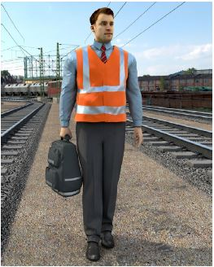
Abb. 16 Der Triebfahrzeugführer trägt eine Warnweste Klasse 2. Den schwarzen Rucksack darf er nicht auf dem Rücken tragen, da dadurch die Warnweste teilweise verdeckt wird.
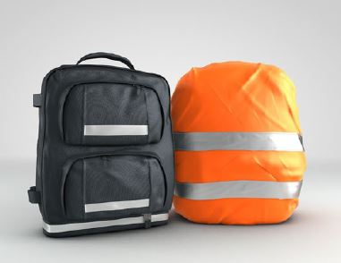
Abb. 17 Rucksack für Triebfahrzeugführende mit Warnüberzug
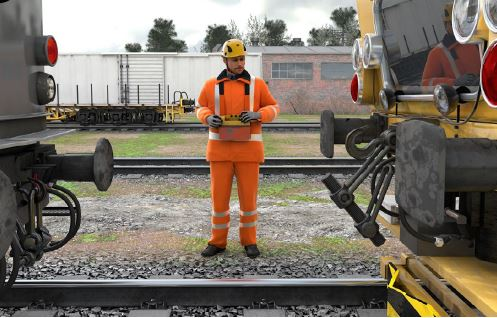
Abb. 18 Lokrangierführer, Rangierer und Wagenmeister tragen Jacke und Hose als Warnkleidung.
Mitarbeitende im Bahnbetrieb, die ganztägig in Gleisanlagen tätig sind und durch bewegte Schienenfahrzeuge gefährdet werden, sollen Jacke und Hose als Warnkleidung tragen. Dadurch wird die Erkennbarkeit in vielen Situationen deutlich erhöht. Zum Beispiel kann der Betriebsdienstmitarbeitende noch erkannt werden, wenn nur ein Hosenbein oder Jackenärmel seitlich am Schienenfahrzeug von ihm sichtbar wird. Warnjacken und Warnwesten mit senkrechten Reflexstreifen im Schulterbereich erhöhen die Erkennbarkeit bei Dämmerung bzw. in der Nacht, insbesondere wenn sich der oder die Betriebsdienstmitarbeitende bückt.
Bei vielen Betriebsdienstmitarbeitenden muss die Warnkleidung gleichzeitig die Anforderungen einer Schutzkleidung gegen Regen und Kälte erfüllen (siehe Kapitel 4.7.). Bei Gefährdung durch feuerflüssiges Gut (z. B. Roheisen, Schlacke) ist schwerentflammbare Warnkleidung (siehe Kapitel 4.8) zu tragen.
Bei hohen Außentemperaturen im Sommer besteht bei Betriebsdienstmitarbeitenden verständlicherweise der Wunsch, Warnhemden oder Warn-T-Shirts anstatt der langärmligen Jacke zu tragen. Diese haben jedoch den Nachteil, dass sie für die Unterarme keinen mechanischen Schutz (gegen Riss- und Schürfwunden) und keinen Schutz gegen UV-Strahlung bieten. Daher ist im Einzelfall mit Hilfe der Gefährdungsbeurteilung zu entscheiden, ob Warnhemden oder Warn-T-Shirts der Klasse 2 nach DIN EN ISO 20471 getragen werden dürfen (Designbeispiele siehe Kapitel 5.2)
Auch bei der Postensicherung an Bahnübergängen und -überwegen durch Bahnübergangsposten (BüP) oder durch das Zugpersonal ist Warnkleidung erforderlich, damit der oder die Betriebsdienstmitarbeitende von den Straßenverkehrsteilnehmenden frühzeitig und leicht erkennbar ist. Bei der Postensicherung ist mindestens eine Warnweste Klasse 2 zu tragen. Bei stationär an einem Bahnübergang eingesetzten Bahnübergangsposten wird aufgrund der hohen Gefährdungen durch Straßenfahrzeuge Jacke und Hose als Warnkleidung empfohlen.
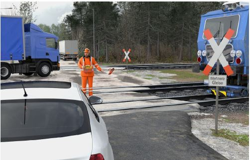
Abb. 19 Durch die Warnkleidung ist der Bahnübergangsposten für den Straßenverkehr gut erkennbar.
Nicht zwingend gefordert ist das Tragen von Warnkleidung im Gleisbereich, wenn Betriebsdienstmitarbeitende ausschließlich spezielle Verkehrswege für Personen benutzen (vgl. Durchführungsanweisungen zu § 17 (2) DGUV Vorschrift 72 bzw. § 17 (2) DGUV Vorschrift 73). Die Anforderungen an diese Verkehrswege enthält § 8 o. a. Vorschriften: sie müssen
Ob auf das Tragen von Warnkleidung verzichtet werden kann, ist im Rahmen der Gefährdungsbeurteilung festzustellen.
Diese Ausnahmeregelung wird häufig bei Straßenbahnen angewendet, wenn Fahrer und Fahrerinnen in Abstellhallen oder Abstellanlagen im Freien durch den Gleisbereich über gut gestaltete und übersichtliche Verkehrswege zu den Abstellplätzen der Straßenbahnen gehen müssen. Bei Eisenbahnen dagegen wird auf Grund deren Betriebsverhältnisse die Gefährdungsbeurteilung in der Regel ergeben, auch auf solchen Verkehrswegen grundsätzlich Warnkleidung mindesten der Klasse 2 (meist eine Warnweste) zu tragen.
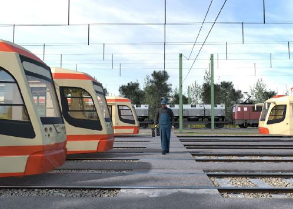
Abb. 20 Im Gleisbereich von Straßenbahnen ist bei der ausschließlichen Benutzung gut gestalteter und übersichtlicher Verkehrswege für Personen das Tragen von Warnkleidung nicht zwingend erforderlich.
Bei Straßenbahnen ist das Tragen von Warnkleidung auch dann nicht zwingend erforderlich, wenn Versicherte im Schutze des stehenden Schienenfahrzeuges kurzfristige Tätigkeiten ausführen, z. B. Weichen stellen, Kuppeln, Betätigen von Signalfernsprechern oder Schlüsseltastern (vgl. Durchführungsanweisungen zu § 17 (2) DGUV Vorschrift 73). Werden diese Tätigkeiten im Bereich des Individualverkehrs ausgeführt, wird die Gefährdungsbeurteilung in der Regel ergeben, ebenfalls Warnkleidung der Klasse 2 (meist eine Warnweste) zu tragen.
Betriebsfremde sind Versicherte, die weder Tätigkeiten nach Kapitel 6.1.1 noch nach Kapitel 6.2 ausführen, aber dennoch Gleisanlagen begehen oder in ihnen tätig sind und durch bewegte Schienenfahrzeuge gefährdet werden. Auch diese Tätigkeiten fallen – wie die Tätigkeiten der Betriebsdienstmitarbeitenden nach Kapitel 6.1.1 – unter den Geltungsbereich der DGUV Vorschrift 72 "Eisenbahnen" bzw. der DGUV Vorschrift 73 "Schienenbahnen".
Betriebsfremde sind z. B. Anlagenbedienende in Industrieanlagen mit Schienenbahnen, Be- und Entladepersonal, Monteure und Monteurinnen von Energieversorgungsunternehmen. Im Gegensatz zu den Betriebsdienstmitarbeitenden sind diese Mitarbeitenden nicht am Bahnbetrieb beteiligt. Daher haben sie keine oder nur geringe Kenntnisse über die betrieblichen Abläufe und können die Gefährdungen nicht oder nur sehr unzureichend einschätzen. Sie unterliegen auch keinen speziellen Sicherungsmaßnahmen gegen Gefahren aus dem Bahnbetrieb, wie sie für alle Versicherten bei Arbeiten im Gleisbereich vorgeschrieben sind.
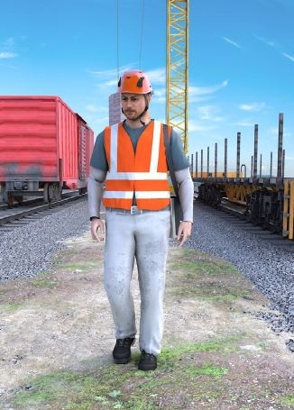
Abb. 21a Betriebsfremde sind nicht am Bahnbetrieb beteiligt, aber trotzdem durch bewegte Schienenfahrzeuge gefährdet, wie dieser Kranschlosser.
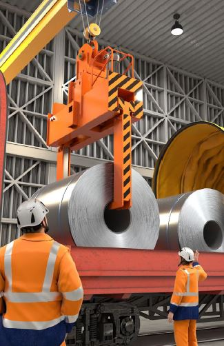
Abb. 21b … oder diese Versicherten in einer Ladestelle.
Betriebsfremde müssen mindestens Warnkleidung der Klasse 2 tragen. Das wird in der Regel durch Tragen einer Warnweste gewährleistet.
Versicherte, die Arbeiten im und am Gleisbereich zur Errichtung, Instandhaltung, Änderung und Beseitigung von Bahn- und anderen Anlagen oder damit zusammenhängende Arbeiten durchführen und durch den Bahnbetrieb gefährdet werden können, gelten die Regelungen in § 7 DGUV Vorschrift 77 "Arbeiten im Bereich von Gleisen" bzw. DGUV Vorschrift 78.
Versicherte sind bei Arbeiten im Gleisbereich unabhängig von der Art der Sicherung der Gleisbaustelle durch Zug- und Rangierfahrten sowie durch Gleisbaumaschinen gefährdet und müssen daher Warnkleidung tragen. Das Tragen der Warnkleidung kann die Sicherungsmaßnahme nicht ersetzen. Warnkleidung ist auch bei Arbeiten außerhalb des Gleisbereichs erforderlich, wenn die Gefahr besteht, unbeabsichtigt in diesen zu gelangen.
Gleisbauarbeiter und Gleisbauarbeiterinnen sowie Sicherungspersonal tragen Warnkleidung und werden dadurch von Triebfahrzeugführenden und Fahrern bzw. Fahrerinnen anderer Fahrzeuge deutlich leichter erkannt. Warnkleidung dient aber auch der besseren Erkennbarkeit von Gleisbauarbeitern und Gleisbauarbeiterinnen durch das Sicherungspersonal. Stellt das Sicherungspersonal fest, dass Versicherte auf deren Warnsignale nicht reagieren, müssen sie dem oder der Triebfahrzeugführenden das Nothaltsignal geben (vgl. DGUV Vorschrift 77 bzw. 78, § 5 [4]).
Entsprechend dem Ergebnis der Gefährdungsbeurteilung ist Warnkleidung so auszuwählen, dass insgesamt die Klasse 2 oder 3 erreicht wird. Es ist mindestens Warnkleidung der Klasse 2 nach DIN EN ISO 20471 zu tragen. Für diese Tätigkeiten das wesentliche Kriterium bei der Auswahl der Warnkleidung bei Arbeiten in Gleisanlagen die Erkennbarkeit der Warnkleidung unter Berücksichtigung der auslasse 2 nicht erreicht werden.
Für Versicherte auf Gleisbaustellen wird grundsätzlich Warnkleidung in der Farbe fluoreszierendes Orange-Rot empfohlen. Bei Gleisbaustellen ist es häufig von Vorteil, wenn Sicherungspersonal und andere Versicherte durch unterschiedliche Farben der Warnkleidung erkennbar sind, z. B. indem das Sicherungspersonal gelbe und alle anderen Versicherten orange-rote Warnkleidung tragen. Das kann auch in der Sicherungsanweisung der für den Bahnbetrieb zuständigen Stelle (BzS) oder den Infrastrukturbetreiber oder die Infrastrukturbetreiberin vorgegeben werden.
Warnkleidung der Klasse 3 nach DIN EN ISO 20471 wird
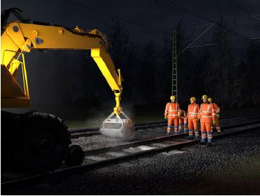
Abb. 22 Gleisoberbauarbeiten: Empfehlung Warnkleidung Klasse 3
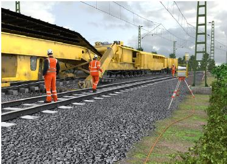
Abb. 23 Maschinenbediener im Nachbargleis: Empfehlung Warnkleidung Klasse 3
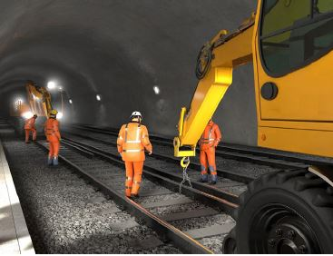
Abb. 24 Beschäftigte im Arbeitsbereich von Gleisbaumaschinen: Empfehlung Warnkleidung Klasse 3
Bei Arbeiten mit Gefahr durch Funkenflug oder offene Flammen, wie z. B. Schienentrennen oder Einsatz flüssiggasbetriebener Wärmewagen, muss gewährleistet sein, dass sich die Warnkleidung nicht entzünden kann (siehe Kapitel 4.8).
Bei Vegetationspflegearbeiten im Gleisbereich von Straßenbahnen muss mindestens Warnkleidung Klasse 2 getragen werden. Ist durch den Straßenverkehr eine erhöhte Gefährdung gegeben, dann ist Warnkleidung Klasse 3 zu tragen.
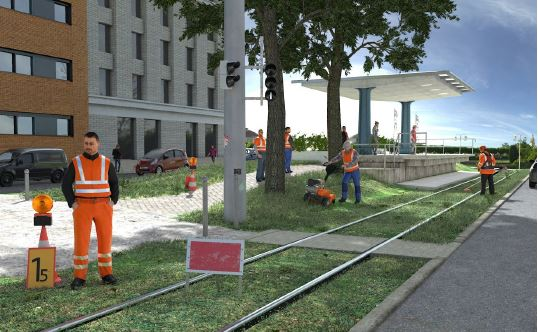
Abb. 25 Vegetationspflegearbeiten im Gleisbereich von Straßenbahnen: mindestens Warnkleidung Klasse 2